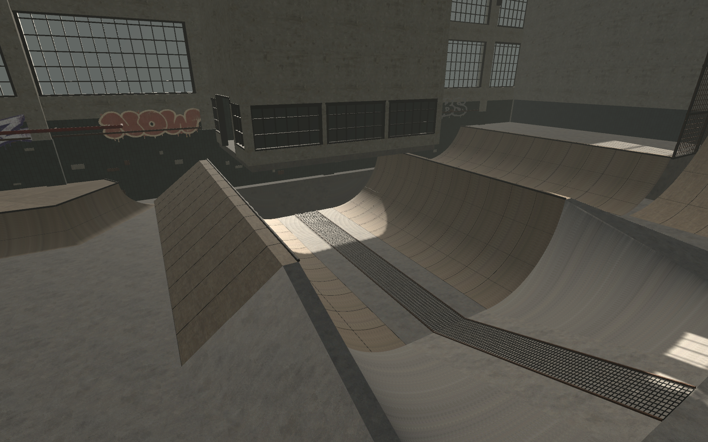
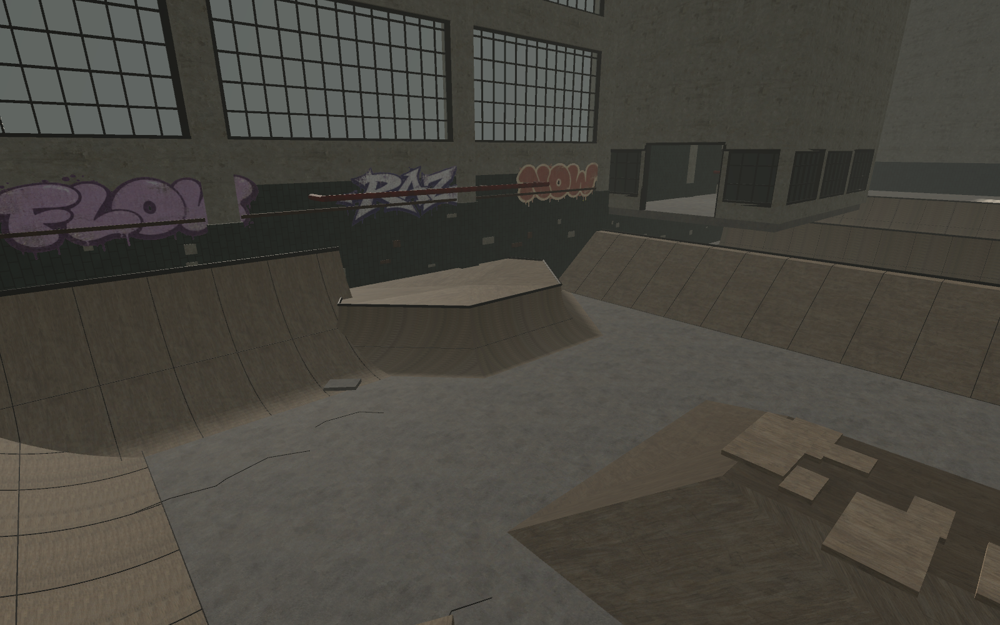
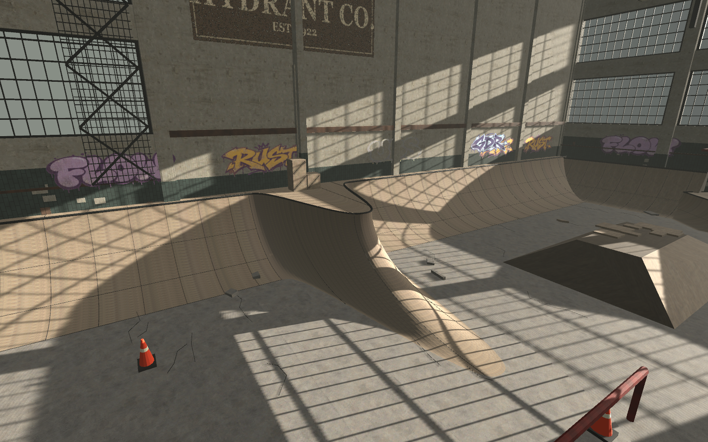
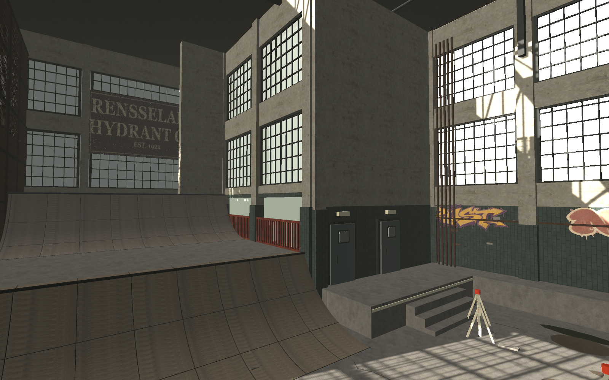
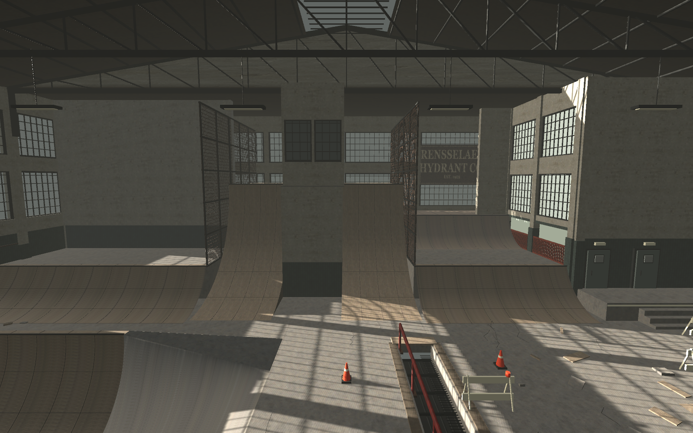
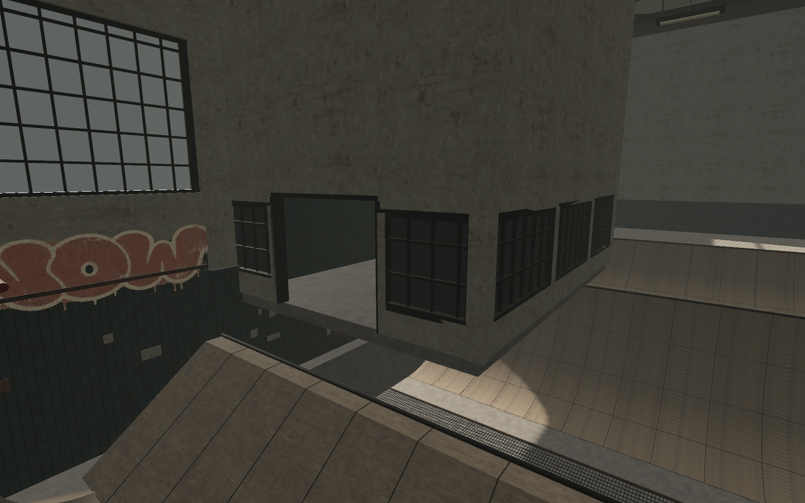
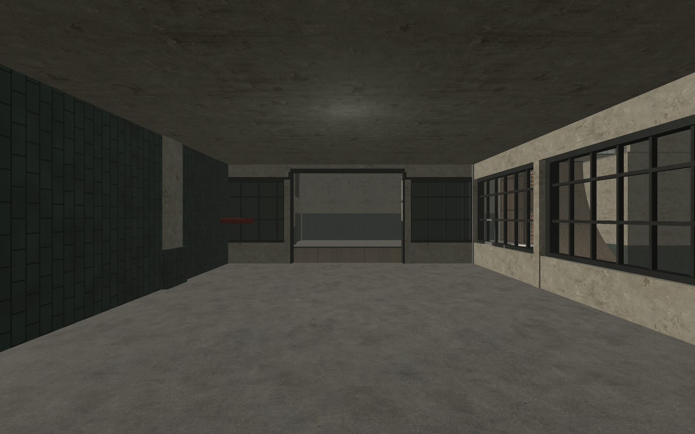
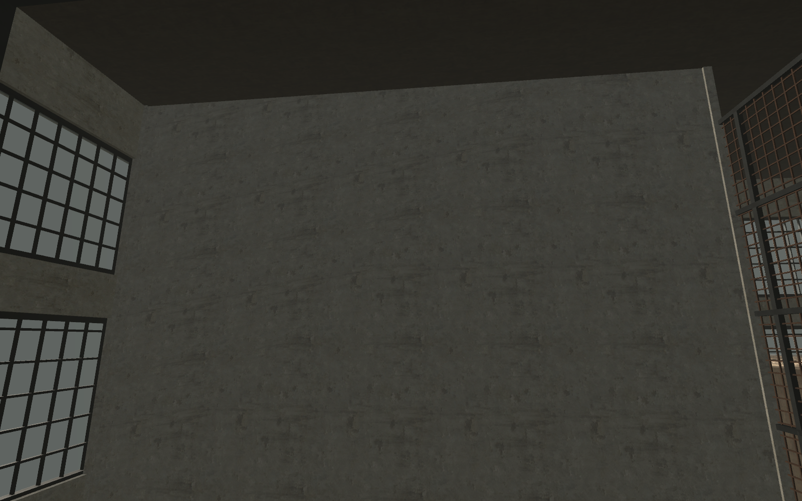
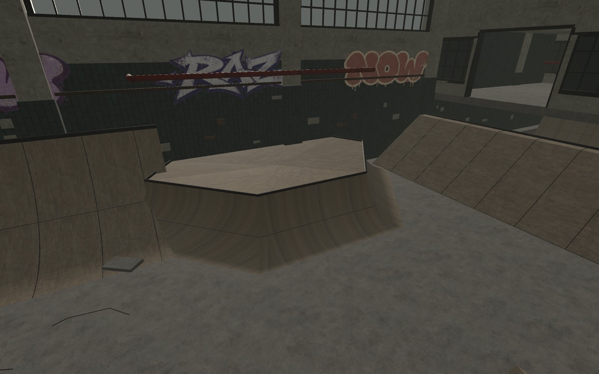

WAREHOUSE / ACCESS AND SEAMS / V12
按你最新的位置，完成通行结构与补缝
先保存并备份最新手动场景，再局部修改网格和碰撞。保存后重开核对：125 个原有对象的位置、旋转、缩放均与本轮基准一致。以下对照是本轮修改前后的同机位渲染。
1 · 灰色直坡延长、放缓，格栅同轴



横向进入凹区的直坡水平长度由 3.6 m 增至 6 m，下沉深度仍为 2.25 m，坡角约由 32° 降至 20.6°。排水格栅沿同轴下坡接到底板。两端木弧坡保持你当前摆放的高度和位置；扩出的坡口重新补接地板，清除原地浮动装饰。
2 · 保留抬高的平台，周围改为木质弧坡



保留本轮平台的平面轮廓和顶面高度（约 1.323 m）。外围改成木弧坡，底端落到大厅地面，靠墙边补齐；坡顶保留金属包边。
3 · 北墙中央长弧坡顶与两旁齐平



保留向大厅伸出的轮廓和你调整的位置，把中央顶面降至与两旁相同的 2.6 m。肩部圆顺连接，木箱同步落回新顶面。
4 · 门台收回建筑边界，修补后侧接缝



裁掉侵入旁边木坡的门台端部，补上截面；保留你摆放的门台、台阶和平台高度，后边接回建筑。
5 · 白色参考处补整墙，沿斜屋顶封口



以白色长条的平面位置补建从平台到屋顶的整墙；白色参考块保留并关闭显示、碰撞。按移动后的两座高坡接好外围平台和中央柱体，保留你细调的窗墙位置。两座高坡依然同宽、同高、同曲线，窗墙后方仍有横向通道。
6 · 办公室内部中空，窗带层两侧入口贯通


按你的确认，通路在办公室内部窗带层。补建室内地板、内墙与顶板，两端侧面留出入口；体量仍接至屋顶，外墙两个转角窄缝已补齐。室内地面高约 2.73 m，人物胶囊从三个横向位置双向穿过，六次检测均无遮挡。
收口近景


验证与备份
| 项目 | 结果 |
|---|---|
| 手动变换 | 保存重开后，125 个原有对象与最新基准一致。 |
| 接面 | 366 处木坡／地板、300 处直坡／格栅采样通过；平台接地、北墙等高、门台收边与后缝通过。 |
| 通行 | 办公室双向 6 次胶囊检测通过；入口地板连续，外墙转角闭合；高坡后通道无遮挡。 |
| 网格 | 81 个有效网格、112275 个三角形；法线、材质和场景依赖检查通过。 |
场景 Assets/Max/WarehouseRecreation.unity；预制体 WarehouseEnvironment.prefab。备份 Source~/BeforeAccessRepair~ 包含本轮修改前的手动场景及依赖，ManualPreviews 是本轮修改前同机位渲染。新增检查相机 40…44。
本轮按你最新手动布局修复结构，没有重新配准整段视频。碰撞检测不能替代实际滑板／Leap Motion 操控测试；材质、灯光和细节仍是重建近似。